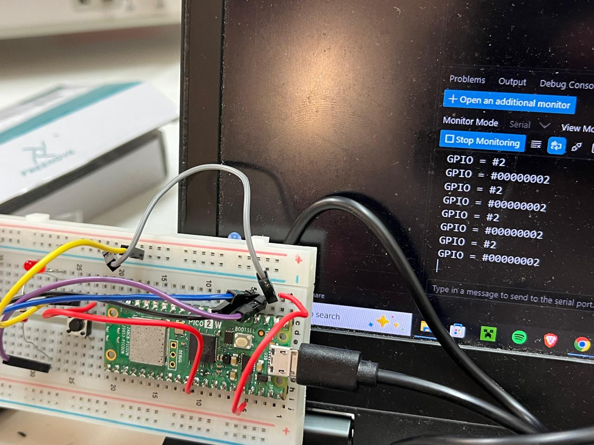
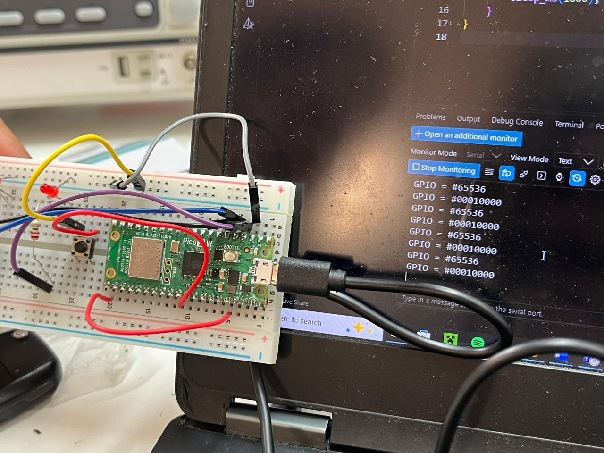
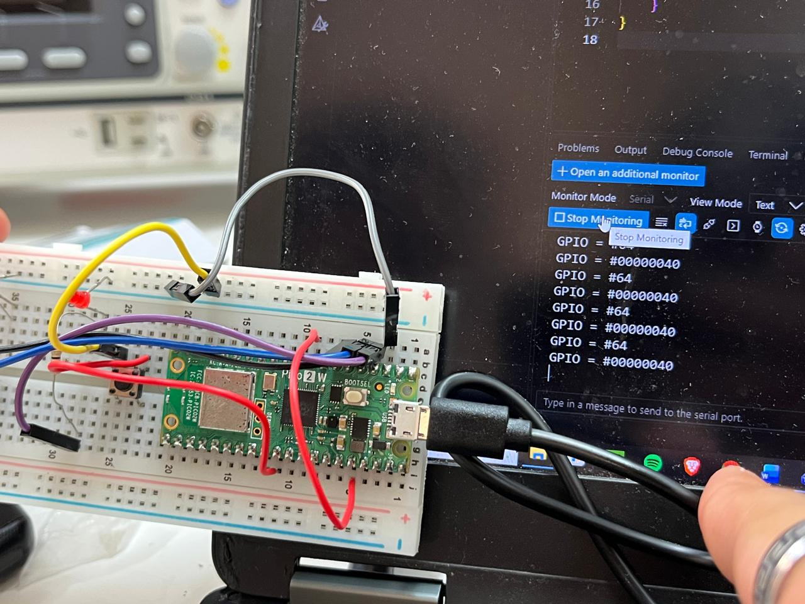

Session 4 - Digital Inputs and Bitmask Register Inspection via Serial Monitor
Goal: Understand how digital input states are mapped into CPU memory on the Raspberry Pi Pico 2 by reading raw 32-bit SIO input registers through the USB Serial Monitor, observing the decimal values obtained when applying voltage (3.3 V) and grounding pins for reset.
Prediction: Since digital GPIOs in the RP2350 SIO architecture are mapped directly to individual bit positions in a 32-bit input register, reading the raw port value when pulling a specific pin HIGH will output a decimal integer corresponding to its exact power of two ($2^{\text{pin}}$). Grounding the pin will clear the bit back to zero.
Setup
- Pin map:
- Input test pins:
GPIO1,GPIO6,GPIO16. - Common rails: 3.3 V (OUT) rail used to energize the target pin; GND rail used to pull it to 0 V for reset.
-
Indicator: Onboard LED (
PICO_DEFAULT_LED_PIN). -
Non-default:
- Modified line 45 of
CMakeLists.txtto enable USB CDC output:pico_enable_stdio_usb(${PROJECT_NAME} 1)(changing the parameter from0to1) so the Serial Monitor in VS Code could display raw text prints.
What we did
- Created a new project in VS Code with the Raspberry Pi Pico extension targeting the Pi Pico 2.
- Modified line 45 in
CMakeLists.txtby placing a1onpico_enable_stdio_usbto route standard I/O streams directly to the USB connection. - Initialized standard I/O via
stdio_init_all()and configured target GPIO pins as digital inputs (gpio_set_dir(pin, 0)). - Configured the main loop to continuously sample and print the integer value of the active pin register over the Serial Monitor.
- Manually applied 3.3 V to each individual pin and subsequently grounded it to observe the decimal value representation and verify register clearing.
- Monitored the console output in the VS Code Serial Monitor at 115200 baud, recording the resulting decimal values (
2,64,65536).
Evidence
Serial Monitor Register Readings

Figure 1: Photo demonstrating manual voltage assertion on input pins and the corresponding decimal values displayed on the Serial Monitor using GPIO 1 = 2.

Figure 2: Photo demonstrating manual voltage assertion on input pins and the corresponding decimal values displayed on the Serial Monitor using GPIO 16 = 36536.

Figure 3: Photo demonstrating manual voltage assertion on input pins and the corresponding decimal values displayed on the Serial Monitor using GPIO 6 = 64.
Predicted vs measured
| Tested Pin | Applied State | Predicted Bit | Predicted Decimal ($2^{\text{pin}}$) | Serial Monitor Reading | Status |
|---|---|---|---|---|---|
GPIO1 |
3.3 V (HIGH) | Bit 1 | $2^1 = 2$ | 2 |
Verified |
GPIO6 |
3.3 V (HIGH) | Bit 6 | $2^6 = 64$ | 64 |
Verified |
GPIO16 |
3.3 V (HIGH) | Bit 16 | $2^{16} = 65536$ | 65536 |
Verified |
| Any Pin | GND (Reset) | Bit cleared | 0 |
0 |
Verified |
What went wrong
-
When first opening the Serial Monitor in VS Code, no data was transmitted over the terminal. Standard I/O output in the default template was configured for UART rather than USB CDC. Setting
pico_enable_stdio_usb(${PROJECT_NAME} 1)in line 45 ofCMakeLists.txtresolved the communication pipeline. -
If an input pin was left disconnected (floating) without a direct connection to 3.3 V or GND, electrostatic noise caused erratic switching between states. Firmly asserting the pin to the 3.3 V rail and cleanly tying it to GND for reset produced consistent decimal outputs.
Code
// Initialize pins as inputs
for (int i = 0; i < 3; i++) {
gpio_init(PINS[i]);
gpio_set_dir(PINS[i], 0);
}
while (true) {
// Read raw 32-bit input register from SIO
uint32_t raw_inputs = sio_hw->gpio_in;
// Print decimal value directly if any tested pin is high
if (raw_inputs & ((1u << 1) | (1u << 6) | (1u << 16))) {
printf("Register Value: %lu\n", (unsigned long)raw_inputs);
gpio_put(LED, 1);
} else {
gpio_put(LED, 0);
}
sleep_ms(200);
}
Open question
- Since reading the full 32-bit input register returns the raw binary weight
2^ pinrather than a normalized boolean (0 or 1), is reading the entire register at once computationally preferred when scanning buses or parallel ports compared to invoking individual pin-by-pingpio_get()calls?